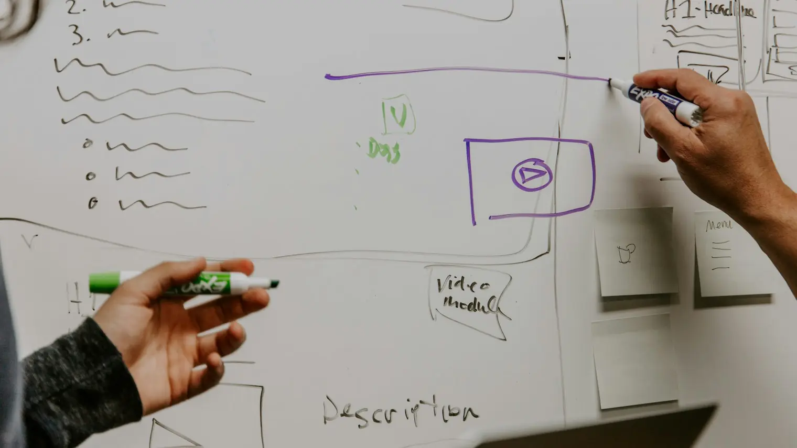

You've spotted a problem and you think an app could fix it. Most people stop there, or spend thousands too early. Here are the steps that turn an idea into something real, in the right order.
1. Write the problem in two sentences
Not the app. The problem. Who has it, and what goes wrong for them. For example: "Building surveyors spend four evenings a week typing up reports. Photos and notes get lost between the site and the laptop."
If you can't write it in two sentences, the idea isn't clear enough yet, and that's fine. Keep going until you can.
2. Check what already exists
Search for the problem, not your solution. Ask people in the industry what they use. If there's already a good tool at a fair price, that's useful to know now. If the tools people use are clumsy, expensive or built for someone else, that's an opening.
3. Talk to ten people who have the problem
Ask about the last time it happened, what it cost them, and what they do about it now. Don't pitch your idea. Their answers tell you whether the problem is big enough to pay to fix. Our guide to validating an app idea goes through this step by step.
4. Decide the one job the first version does
Pick the one person who feels the problem most and the one job they need done. Everything else goes on a "later" list. A small first version is cheaper, faster and teaches you more. See what goes in a first version.
5. Choose how to build it
- Build it yourself with an AI app builder: good for testing, not usually for a product customers pay for. See can AI build my app?
- A freelancer: often cheaper, works well if you can manage the project and the freelancer is experienced.
- A studio: design, building and launch in one place, usually at a fixed price.
- A technical co-founder: someone who builds it for a share of the business. Hard to find, and a big commitment for both of you.
6. See it before you build it
Before committing to a full build, get a clickable prototype and show it to the people you spoke to. Their reaction to something they can tap is far more honest than their reaction to a description. It's the cheapest way to avoid building the wrong thing.
7. Know your budget
A focused first version of a web app or phone app usually costs between £12,000 and £40,000 in the UK. Our guide to what it costs to build an app has three example projects with rough prices.
What not to worry about yet
- Someone stealing your idea. Ideas are rarely the hard part. See how to protect an app idea in the UK.
- The technology. A good developer will choose it and explain it in plain English.
- The perfect name and logo. They can come later.
Next step
If you've done steps 1 to 4, you're ready for a conversation. Tell us the problem and who has it, or start with a 2-week prototype.